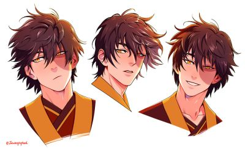

VIOLETTA ERIKA CHRISTY
Zuko is a Fire Nation royal and firebending master, he is the eldest child and only son of Princess Ursa and Fire Lord Ozai. He is recognizable by the distinctive burn scar on the left side of his face, which was given to him by his father, Ozai. Zuko devoted three years to trying to capture the long-lost Avatar to end his banishment and regain his honor as Crown Prince of the Fire Nation. With support from his paternal uncle, General Iroh, and after much internal struggle and turmoil, Zuko grew disillusioned and rejected Ozai and his model of the Fire Nation. He instead joined the Avatar's group to become Aang's lifelong friend and firebending mentor and was determined to end the war and restore both his and the Fire Nation's honor.
While Aang defeated Ozai, Zuko, with the help of Katara, defeated his younger sister, Princess Azula, and took his place as Fire Lord. He also declaring the end of the Hundred Year War and the start of a new era of love and peace. Nevertheless, he succeeded in maintaining peace and eventually became one of the founders of the United Republic of Nations. Zuko stepped down from his position as Fire Lord and became an ambassador of peace, relinquishing the throne to his daughter, Izumi.
Zuko was the firstborn child of Prince Ozai and Princess Ursa. From a young age, he was disdained by his father due to lacking the "spark in [his] eyes" typical for firebenders.Indeed, Zuko would struggle to become a strong bender. However, he displayed a strong sense of empathy and morality from an very early point. As they got older, Zuko and Azula eventually grew apart, and he became the object of his sister's manipulation, ridicule, and deception.